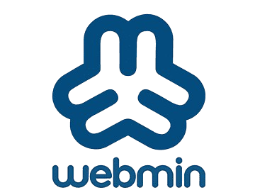

Installation automatique, redémarrage automatique après installation.
Mot de passe administrateur : définir et confirmer un mot de passe sécurisé.
Configuration IP :
Panneau de configuration → Réseau → Modifier adapteur.
Clic droit Ethernet → Propriétés → IPv4 → Propriétés.
Installer rôles : Active Directory, DHCP, DNS, Web Server (IIS).
Boot Manager : priorité Windows Boot Manager (F10/F12).
Installation de Debian 12 - Guide détaillé
Démarrage sur la clé USB :
Allumez le PC puis appuyez immédiatement et plusieurs fois sur F12 ou F10 pour accéder au menu de démarrage.
Dans le menu qui s'affiche, sélectionnez l'entrée UEFI : [Nom de votre clé USB] puis appuyez sur Entrée.
Choisissez ensuite l'option Install Graphique dans le menu Debian.
Configuration de base :
Sélectionnez :
Langue : Français
Pays : France
Clavier : Français
Nom de la machine et domaine :
Nom d’hôte (hostname) : srv-debian
Domaine : patate.local
Utilisateurs et mots de passe :
Mot de passe root (administrateur complet)
Créer un utilisateur classique, par exemple
Définir un mot de passe fort pour cet utilisateur
Partitionnement :
Choisissez Assisté - utiliser un disque entier avec schéma LVM (Volume Logique) pour une gestion simplifiée des partitions.
Confirmez le disque à utiliser (ex: /dev/sda) et validez les changements proposés.
Sélection des paquets logiciels :
À l’étape du choix de l’environnement de bureau :
Sélectionnez : GNOME
Installation du chargeur de démarrage (GRUB) :
Lorsqu’on vous demande où installer GRUB, choisissez /dev/sda (ou le disque principal).
Cela rend Debian amorçable au démarrage.
Configuration du Boot Prioritaire :
Une fois l’installation terminée, redémarrez le PC.
Appuyez sur F12 ou F10 pour accéder au menu de démarrage.
Allez dans les Boot Settings (ou ordre de démarrage) et placez Debian / GRUB comme premier choix.
Sauvegardez avec F10.
Présentation de Webmin

Webmin est une interface web permettant d’administrer un serveur Linux à distance, sans avoir besoin de passer par la ligne de commande. Il offre une gestion graphique des services (FTP, DHCP, etc).